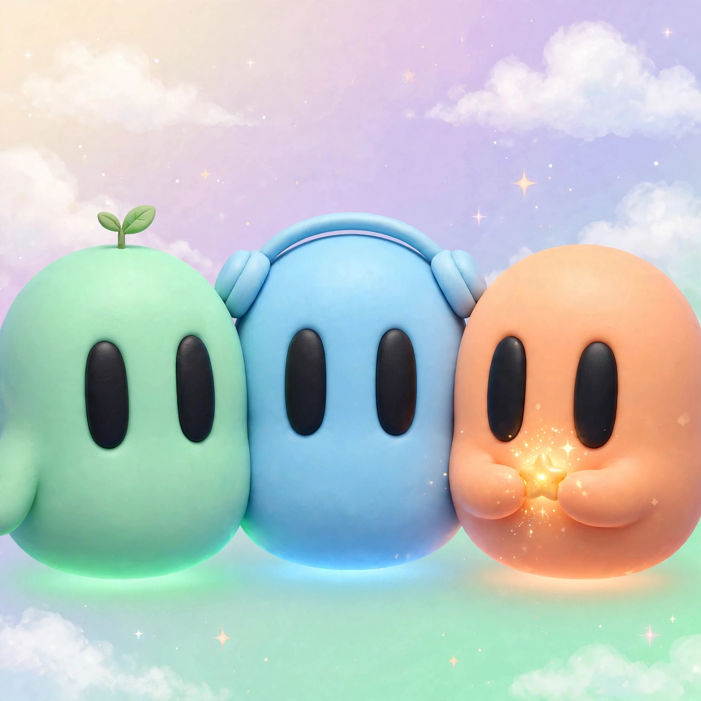

Music with synced lyrics
Listen and follow along with real-time lyric sync.
A charming GNOME extension that lives in your desktop notch. Play music, manage tasks, check your calendar, chat with AI — all inside a tiny cozy world.
GPL-3.0 • No account • Your data stays on your machine
♪ “breathe in, focus in, tasks aligned” — synced with the song
Tap a task to tick it off — the notch keeps the count.
Your day at a glance, from your real calendar.
Ask, and it works through the steps — then shows what it did.
A live sketch of the notch — click the black pill to close or open it, or switch views above. The real island does all of this, on your desktop.

What lives in the notch
Everything you need lives right in your GNOME notch. Lightweight, private, and beautifully simple.
Listen and follow along with real-time lyric sync.
Create tasks, set reminders, and stay on track.
View your day and upcoming events at a glance.
Ask questions and get help right from your notch.
Use your voice to control tasks and apps hands-free.
Connect and extend with the built-in MCP server.
Lightweight
The island sits in your top bar all day, so it has to cost almost nothing. The daemon sleeps while nothing needs it, the closed island barely redraws, and nothing leaks over time.
Measured on GNOME 51 with an Intel GPU, same 22 actions — opening and closing the island, tabs, lyrics, the assistant, alerts and the Shelf. Memory after 100 opens and closes: no leak.
Customize
The island follows your system — and you can shape it further in Settings → Appearance.
Black or Glass. The closed island is a solid black notch. The Glass look turns the island into clear dark glass instead, showing what is behind it, blurred, as you work — with a slider from clear glass to dark smoked glass.
Your colours, your size. Toggles that are on take your accent colour, and the text size is yours to pick — the island, its pages and its alerts follow both.
Your clock, your mascots. A 24-hour or 12-hour clock, and the island’s own trio of clay mascots keeping you company.
Try it — Black is the default, Glass is the see-through look.
A reminder that fired while you were away, or that you simply missed, no longer vanishes: the Reminders page has a “Last 7 days” section, and agents can read it with the new list_reminder_history tool (56 tools now). The one-shot island alert is unchanged.
The model list fills and requests answer, with the --standalone and plain opencode models output that 2.x uses — while opencode 1.x keeps its own flags. From upstream Isle’s PR #45, by AlphaBeast97.
Install
Install Notchfolk and its daemon straight from the repo. Settings are preserved when you update.
curl -fsSL https://raw.githubusercontent.com/galyarderlabs/notchfolk/main/get.sh | bash
Then log out and back in so GNOME Shell loads the new extension. Requires GNOME 46–51 on Linux.
Arch Linux: the AUR package (notchfolk-bin) is prepared in packaging/aur but not published yet, so yay won’t find it — use the command above for now.
FAQ
The things people ask first, answered plainly.
GNOME Shell 46 to 51, on a 64-bit Intel or AMD PC. Other desktops (KDE Plasma, Cinnamon, XFCE, COSMIC) can’t load GNOME Shell extensions, so Notchfolk doesn’t run there — and it doesn’t run on ARM computers like the Raspberry Pi, for which there are no ready-built programs.
Paste curl -fsSL https://raw.githubusercontent.com/galyarderlabs/notchfolk/main/get.sh | bash into a terminal and press Enter — no root, nothing to compile. Then log out and back in once, so GNOME Shell loads the new extension.
On your own computer: data in ~/.local/share/notchfolk, settings in ~/.config/notchfolk. Your tasks, calendar, chats and files stay there unless you connect an AI or the MCP server yourself — nothing is sent anywhere on its own.
Press Super+I (or the mic in the open island) and speak. Your words are turned into text on this computer with Whisper, then the AI you picked answers — and it works as an agent, doing multi-step requests one step at a time. Set it up with notchfolk-setup-voice and check it with notchfolkd --doctor.
Not yet. The package (notchfolk-bin) is prepared in packaging/aur but not published — AUR registration is paused — so yay -S notchfolk-bin finds nothing for now. Use the install command above, or build the package from packaging/aur.
An honest note
Notchfolk is a GNOME extension and a small Rust daemon that lives on your computer. It is not a cloud service, it does not replace your desktop, and it does not think for you. It just puts the things you glance at — music, tasks, calendar, a chat with an AI — into the notch at the top of your screen, so they are one hover away instead of a window away. Your data stays on your machine, the AIs you pick run where you signed in to them, and nothing leaves unless you ask it to. If you want a new desktop, this is not it. If you want the top of your screen to be useful, it is.